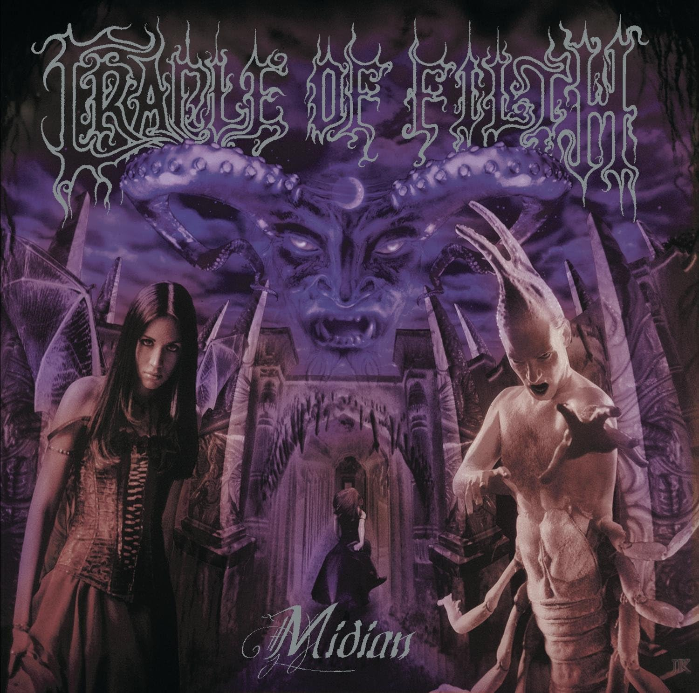

De las páginas al mundo: La influencia de Lovecraft
A dia de hoy, H.P. Lovecraft es uno de los escritores que más han influido en el horror y la literatura sobre fantasía del siglo XX. Durante su vida no fue tan famoso, y casi nadie reconocía sus obras pero después de su muerte sus obras se volvieron importantes, ahora muchos cineastas, escritores y desarrolladores de videojuegos crean teniendo como base lo que Lovecraft escribia y de todas las ideas que el alguna vez escribio, ahora siguen inspirando a generaciones de escritores y en general, personas de todo el mundo.
Influencia en la musica
La influencia de Lovecraft en la música moderna a sido muy amplia y atraviesa una gran variedad de géneros, especialmente en el metal, bandas de renombre como Black Sabbath y Metallica han tomado directamente los mitos de Lovecraft para componer canciones, Metallica compuso un tema llamado "The Thing That Should Not be" que fue inspirado en Cthulhu, dejando de lado el metal, el músico electrónico Coil que lleva directamente la filosofía del horror cósmico de Lovecraft, la mencion de estas bandas y músico, demuestran algo muy importante, la influencia clara que tubieron de Lovecraft y un ejemplo mas claro, es la siguiente banda de Metal.
Proyecto de Joaquín Padilla - Legado de una Tragedia
En la vida del ser humano hemos ido descubriendo vestigios de mentes inquietas qué han sabido plasmar con talento sus ideas, algunos de esos vestigios qué podemos disfrutar son un legado de la humanidad como la literatura y la ópera, siguen siendo admiradas, además de que los nuevos descubridores de estas artes expresan toda su pasión, tal como lo hace el talentoso Joaquín Padilla con su proyecto LEGADO DE UNA TRAGEDIA. Como sabemos este proyecto rinde homenaje a diferentes escritores y el anfitrión de este albúm es Howard Philips Lovecraft, escritor y creador de novelas, relatos y su área que lo hizo famoso, fue la del horror de ciencia ficcion.

Joaquín hace un repaso a las hobras de Lovecraft que más destacaron, como si de capítulos se tratara, involucrando diferentes voces, arreglos fantásticos qué logran crear escenarios qué se van adaptando a su narrativa descriptiva, abarcando principalmente el Power Metal, el Heavy Metal, lo Que hace especial a este albúm es que Cada canción pone banda sonora a uno de los relatos más importantes de Lovecraft. Incluye temas como "La Llamada de Cthulhu", "En las Montañas de la Locura" y "El Horror de Dunwich".

Cthulhu Dawn - Cradle Of Filth
Otra banda que decide homenajear a Lovecraft con una de sus canciones, es Cradle Of Filth, una banda británica de xtreme metal formada en Suffolk, Inglaterra en 1991. La manera en la que homenajea a Lovecraft es atravez de una cancion, Cthulhu Dawn del albúm Midian, la canción narra el despertar de Cthulhu, esa criatura que Lovecraft describia, la premisa es la que Lovecraft planteó en su obra "La llamada de Cthulhu" cuando despierte y la humanidad entera pierde la cordura, Cradle of Filth toma esa idea y la convierte en una cancion casi ceremonial, es como un ritual sonoro, la atmosfera de la canción esta formada por guitarras y teclado orquestal, y la cereza del pastel, la voz de Dani Filth, que trsnmite esa sensacion de perdición y de "algo" muy grande que se acerca.